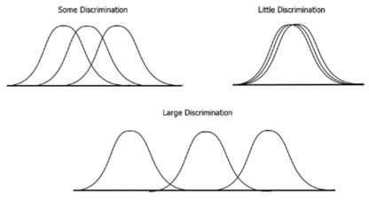
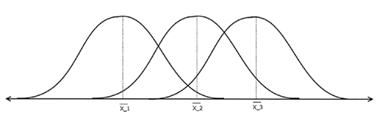

Inferential statistics describes and makes inferences about the population from the sampled data, using hypothesis testing and estimating of parameters.
In hypothesis testing, a research question is a hypothesis asked in question format
Based on the research question, the hypothesis can be a null hypothesis, \(H_0\)(\(μ_1\) = \(μ_2\)) and an alternate hypothesis, \(H_a\) (\(μ_1\) ≠ \(μ_2\)).
If the p-value is less than or equal to alpha, which is usually 0.05, you reject the null hypothesis and say that the alternate hypothesis is true at the 95% confidence interval. If the p-value is more than 0.05, you fail to reject the null hypothesis.
By estimating parameters, you try to answer the population parameters.
For estimating parameters, the parameters can be the mean, variance, standard deviation, and others.
E.g. you calculate the mean of the height of the samples and then make an inference on the mean of the height of the population. You can then construct the confidence intervals, which is the range in which the mean of the height of the population will fall.,
20.1 Correlation
Correlations are statistical associations to find how close two variables are and to derive the linear relationships between them.
You can use correlation to find which variables are more related to the target variable and use this to reduce the number of variables.
Correlation does not mean a causal relationship, it does not tell you the how and why of the relationship.
cor(data$var1, data$var2)
The correlation has a range from -1.0 to 1.0.
20.2 Covariance
Covariance is a measure of variability between two variables.
The greater the value of one variable and the greater of other variable means it will result in a covariance that is positive.
cov(data$var1, data$var2)
Covariance does not have a range. When two variables are independent of each other, the covariance is zero.
20.3 Hypothesis Testing and P-Value
Based on the research question, the hypothesis can be a null hypothesis, H0 (μ1= μ2) and an alternate hypothesis, Ha (μ1 ≠ μ2).
For data normally distributed:
p-value:
A small p-value <= alpha, which is usually 0.05, indicates that the observed data is sufficiently inconsistent with the null hypothesis, so the null hypothesis may be rejected. The alternate hypothesis is true at the 95% confidence interval.
A larger p-value means that you failed to reject null hypothesis.
t-test continuous variables of data.
chi-square test for categorical variables or data.
ANOVA
For data not normally distributed:
non-parametric tests.
20.4 T-Test
A t-test is used to determine whether the mean between two data points or samples are equal to each other.
\(H_0\) (\(μ_1\) = \(μ_2\)): The null hypothesis means that the two means are equal.
\(H_a\) (\(μ_1\) ≠ \(μ_2\)): The alternative means that the two means are different.
In t-test there are two assumptions:
The population is normally distributed.
The samples are randomly sampled from their population.
Type I and Type II Errors:
A Type I error is a rejection of the null hypothesis when it is really true.
A Type II error is a failure to reject a null hypothesis that is false.
20.4.1 One-Sample T-Test
A one-sample t-test is used to test whether the mean of a population is equal to a specified mean.
You can use the t statistics and the degree of freedom (\(df = n -1\)) to estimate the p-value using a t-table.
A two-sample paired t-test is used to test the mean of two samples that depend on each other. The degree of freedom formula is \(df = n-1\)
t.test(data$var1, data$var2, paired=TRUE)
20.5 Chi-Square Test
The chi-square test is used to compare the relationships between two categorical variables.
The null hypothesis means that there is no relationship between the categorical variables.
20.5.1 Goodness of Fit Test
When you have only one categorical variable from a population and you want to compare whether the sample is consistent with a hypothesized distribution, you can use the goodness of fit test.
\(H_0\): No significant difference between the observed and expected values.
\(H_A\): There is a significant difference between the observed and expected values.
To use the goodness of fit chi-square test in R, you can use the chisq.test() function:
data <-c(B=200, c=300, D=400)chisq.test(data)
20.5.2 Contingency Test
If you have two categorical variables and you want to compare whether there is a relationship between two variables, you can use the contingency test.
\(H_0\): the two categorical variables have no relationship. The two variables are independent.
\(H_A\): the two categorical variables have a relationship. The two variables are not independent.
ANOVA is the process of testing the means of two or more groups. ANOVA also checks the impact of factors by comparing the means of different samples.
In ANOVA, you use two kinds of means:
Sample means.
Grand mean (the mean of all of the samples’ means).
Hypothesis: - \(H_0\): \(μ_1\)= \(μ_2\) = … = \(μ_L\) ; the sample means are equal or do not have significant differences. - \(H_A\): \(μ_1\) ≠ \(μ_m\); is when the sample means are not equal.
You assume that the variables are sampled, independent, and selected or sampled from a population that is normally distributed with unknown but equal variances.
20.6.1 Between Group Variability
The distribution of two samples, when they overlap, their means are not significantly different. Hence, the difference between their individual mean and the grand mean is not significantly different.

Figure 6: Between group variability
This variability is called the between-group variability, which refers to the variations between the distributions of the groups or levels.
20.6.2 Within Group Variability
For the following distributions of samples, as their variance increases, they overlap each other and become part of a population.

Figure 7: Within group variability
The F-statistics are the measures if the means of samples are significantly different. The lower the F-statistics, the more the means are equal, so you cannot reject the null hypothesis.
20.6.3 One-Way ANOVA
One-way ANOVA is used when you have only one independent variable.
Call:
aov(formula = data$var1 ~ data$var2, data = data)
Terms:
data$var2 Residuals
Sum of Squares 0.162695 9.255706
Deg. of Freedom 2 9
Residual standard error: 1.014106
Estimated effects may be unbalanced
summary(fit)
Df Sum Sq Mean Sq F value Pr(>F)
data$var2 2 0.163 0.0813 0.079 0.925
Residuals 9 9.256 1.0284
20.6.4 Two-Way ANOVA
Two-way ANOVA is used when you have two independent variables. (continuar en el ejemplo anterior):
Call:
aov(formula = data$var1 ~ data$var2 + data$var3, data = data)
Terms:
data$var2 data$var3 Residuals
Sum of Squares 0.162695 0.018042 9.237664
Deg. of Freedom 2 1 8
Residual standard error: 1.074573
1 out of 5 effects not estimable
Estimated effects may be unbalanced
summary(fit)
Df Sum Sq Mean Sq F value Pr(>F)
data$var2 2 0.163 0.0813 0.070 0.933
data$var3 1 0.018 0.0180 0.016 0.904
Residuals 8 9.238 1.1547
## var1 does not depend on var2's mean and var3's mean
20.6.5 MANOVA
The multivariate analysis of variance is when there are multiple response variables that you want to test.
Example:
res <-manova(cbind(iris$Sepal.Length, iris$Petal.Length) ~ iris$Species, data=iris) summary(res)
The Wilcoxon signed rank test is used to replace the one-sample t-test.
Hypothesis:
\(H_0\): \(μ_1\)= \(μ_o\); the null hypothesis is that the population median has the specified value of \(μ_0\)
\(H_a\): \(μ_1\) ≠ \(μ_o\)
To use the Wilcoxon signed rank test in R, you can first generate the data set using random.org packages, so that the variables are not normally distributed.